The owner of the car rental business we used in Almaty said, when she learned of our plans to visit Aktau in Western Kazakhstan, “Aktau is not like Almaty. Be prepared. People are not as friendly.” She also warned us that people do not speak as much English in Aktau. After spending over a week in the Aktau and larger Mangystau region, I think only the part about English really stands. Kazakhstan continues to have some of the nicest and most friendly people we’ve met while traveling, and our five day overlanding trip was magnificent, showing off Kazakhstan’s truly striking and dramatic landscapes, unlike places we’ve been before.
>
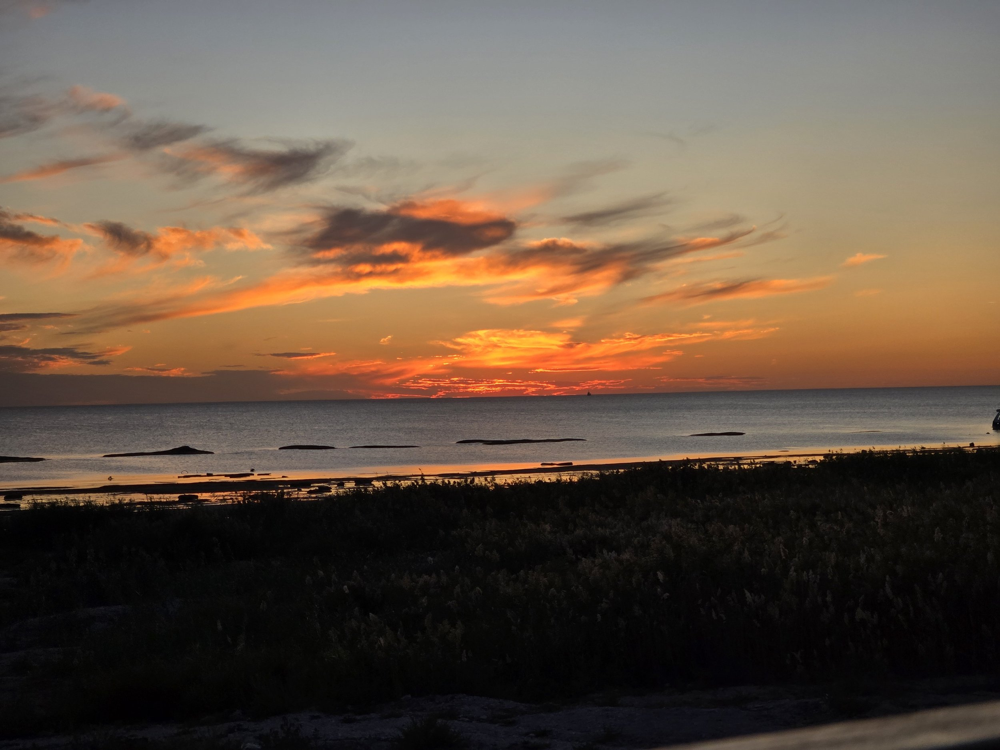
The Mangystau region of Kazakhstan is a peculiar place. It used to be pretty much a dead zone (in modern times… there have always been some nomadic activity) until around the 18th century when Russia (the Soviet Union at the time) took a particular interest in the region because of its ambitions to expand into Central Asia. In the 20th century, the real treasure was found plentifully in the region: oil and gas. Bam. Cities like Aktau and Atyrau sprung up to shelter the growing population employed by oil companies. The locals call them “oil men.” During our visit to Aktau, we could see huge residential complexes actively being built that evinced continued growth of the region. Another signal: staring at vast expanses of land peppered with pumpjacks continuously lifting Kazakhstan’s 1.8 million barrels of oil every single day. This was the first time I’ve seen part of the physical process of harvesting the oil that the world so depends on. It wasn’t pretty and it looked really weird to see so many of these machines continuing bobbing up and down like drinking birds.
>

We ended up spending much longer than planned in Aktau. Our original plan was to spend just a couple days in the city to visit the few sites there and then to do the overlanding trip ourselves across the Mangystau region. We ended up deciding not to do it because we’ve never planned and executed our own 4x4 trip and doing a multi-day tour in a country where we also cannot speak the language seemed like probably not the best idea. We were in the midst of planning how we might be able to do day trips to and from Aktau to visit some of the sites when we stumbled across one of the only companies in the area that does overlanding trips for tourists and they happened to be running a five day version several days after we were planning our own. After figuring out that we’d just need to make sure to fly out of the country the very next day because we would hit the thirty day stay limit in Kazakhstan, we signed up for the tour. And breathed perhaps a sigh of relief that we wouldn’t have to try to figure out everything from how to rent camping gear, where to camp, how much water to bring, how to do navigation in an area without roads, and more.
That gave us quite some time to kill in Aktau and it isn’t really a city with a ton of things to do so we ended up making significant progress on planning for Jordan instead. It’s worked out really well; as I write this, I’m in the middle of a desert in Jordan called Wadi Rum. We’ve had full days in Jordan because we haven’t had to spend too much time planning and it’s been nice to go from place to place with hotels/Airbnbs and excursions booked in advance. A bit of a departure from the seat-of-our-pants style planning we’ve done at times! The only real thing of note that we did in Aktau was visit a trail called the Rock Trail that was a long boardwalk that bordered the Caspian Sea coast. It was a really lovely walk on a very nicely made wooden path… except for certain parts where they decided to use some sort of tile that was incredibly slippery. Why on earth did they choose those plastic tiles?! Both Kevin and I slipped multiple times and we could literally skate on it in our flip flops. The sea cliffs were actually quite stunning as well; towering titanium white that reminded us of the chalky white cliffs of Møns Klint in Denmark.
>
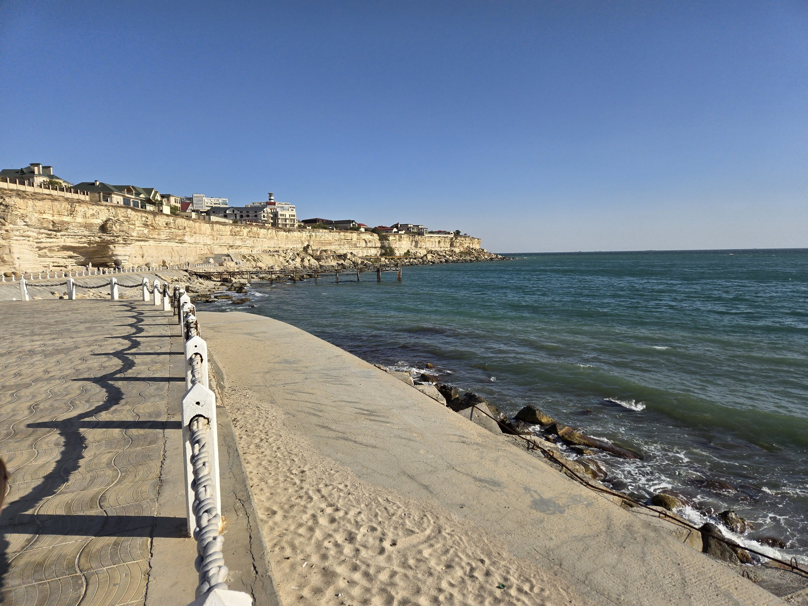
>
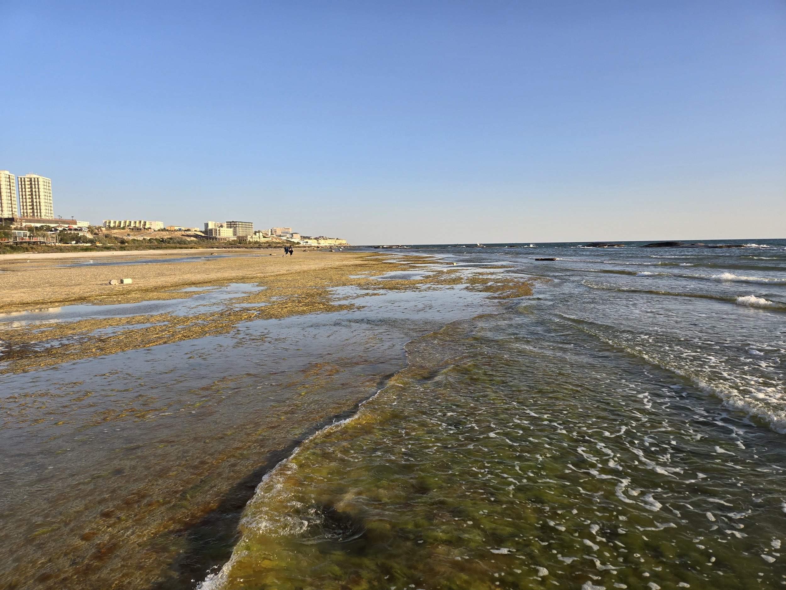
Day 1
We got picked up from our apartments and driven to the office where we ended up having to pare down to one bag for the two of us. The car was packed to the brim with luggage and equipment for our adventure so we didn’t have space for spare luggage. We met our companions for the trip: Betty, a lovely woman from Vancouver, Baygazy, our driver, and Aars, our guide. The five of us were a tight fit in the car, but we settled in nicely and our adventure began! We met folks from a second car that also traveled with us: Fei and Moono from China, Igor from Poland, and their car’s driver, Ayan. I’ve mentioned this in a lot of past posts but having wonderful folks to travel with on these multi-day tours really knocks the experience up a level. We are really happy that we got to travel with these fantastic people who provided us with plenty of good company, chit chat and laughter.
>
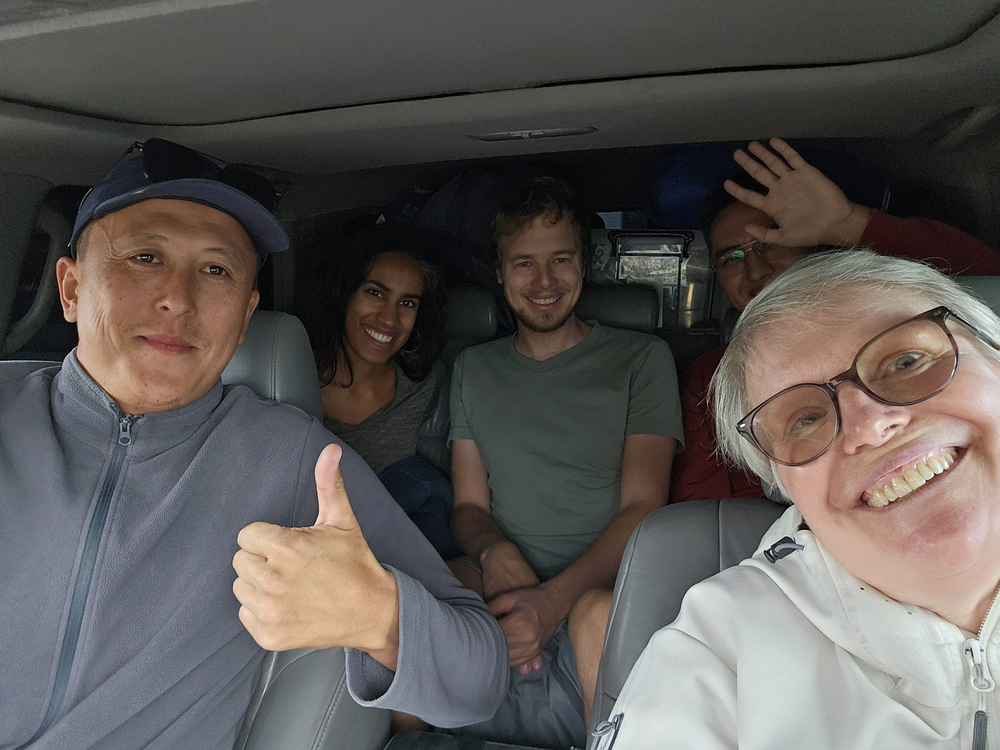
It didn’t take too long before our cars left the perimeter of the city and suddenly we were out in the middle of nowhere with camels and horses wandering the lonely steppes of Kazakhstan. Because we had a bit of a slow start (partially our fault due to our luggage and also a miscommunication about when the car had arrived to pick us up), our first stop was lunch. Here, I learned exactly how unusually it is to be a vegetarian in Kazakhstan. I fielded questions about exactly what I ate and how I managed to be alive by our curious drivers and guide. As for what I ate for lunch: I got a plate of rice with the meat taken out, given away by the stray piece of meat that was hidden in the bottom of the plate. I think I might have been their first-ever vegetarian. I was also amused by how quickly we got into personal life details while passing around a glass of fermented camel milk to share. Very quickly, everyone has a dossier on every other person: where are you from (a nice tame start), what do you do (also tame), how old are you, are you married, how long have you been married, do you have children, how many children, how old are the children, are you going to have children, where are your parents from, and probably more questions that I’ve forgotten now, but by the end of lunch, lets just say that all ice was shattered to smithereens. And regarding the fermented camel’s milk – it tasted like soured yogurt. Not my favorite but I could certainly see how it could be an acquired taste. Our drivers warned us not to drink too much because it may cause some stomach issues for the untrained stomach but no one was voluntarily drinking quite enough for that to be a major concern. Not as bad as kurt though (aside: in Jordan, I tried a version of this called jameed which was actually quite yummy, so I think preparation can make a difference).
>
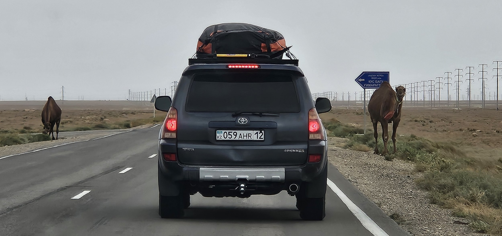
After lunch, we headed out to the various sites for the day. Most days were pretty similar in that there were somewhere between three to four stops planned and at each stop, we’d get out of the vehicles to walk around and take pictures. Sometimes places would involve a small hike. Sometimes places would just be a panorama viewpoint to take pictures and perhaps have a meal. Our first day, we visited Torysh valley, also known as Valley of the Balls, a view point of Sherkala mountain, which is the mountain that apparently looks like a lion but I couldn’t really see it, hiked through Kok-kala tract, and set up camp around the Airakty Valley of Castles, a place that was named by a Ukrainian poet who was exiled to Kazakhstan who also made a bunch of drawings of the mountains in the mid-1800s.
I’m not sure if ironic is the word I’m looking for right now, but let’s use it; I find it ironic that the reason why Western Kazakhstan is rich with oil is the same reason why its landscape is so alien and sui generis. This land used to be covered by oceans (the Tethys Sea) millions of years ago. These oceans had microscopic organisms whose remains settled into the ocean floor between layers of sediment. These layers are starkly visible in many of the sites that we visited, either in the strata of towering cliffs or in the onion-like layers of the rock balls in Torysh. As the ocean vanished and wind and rain blasted through the area, the sandstone transformed into the stunning monuments that dot the former sea floor. As for the sea creatures’ remains, add heat, add pressure and these became hydrocarbons that accumulated in the sandstone, eventually drawn out by the pumpjacks. I can’t believe this never clicked before for me, but this process is why oil is considered to be a fossil fuel.

Torysh valley. Kevin for size.

Sherkala Mountain

Kok-kala Tract.

Kok-kala Tract.

Torysh valley.

Kok-kala Tract from the top.

Torysh valley.

We ended this evening at the Valley of Castles, setting up our wild camp at the base of the hills. We weren’t sure if we were going to end up camping this evening because the weather was variable and if it started to rain, the whole area would turn into a mud pile which is not great for camping but even less great for the cars to drive out of the mud the next day. Thankfully, the weather held and after setting up camp, we had some dinner and went to bed. Apparently that night there were some distant thunderstorms and strong winds but both Kevin and I slept right through!
>
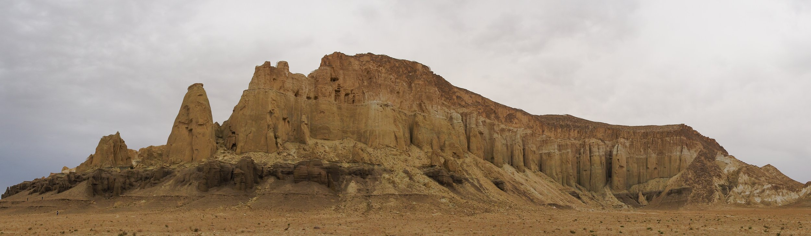
>
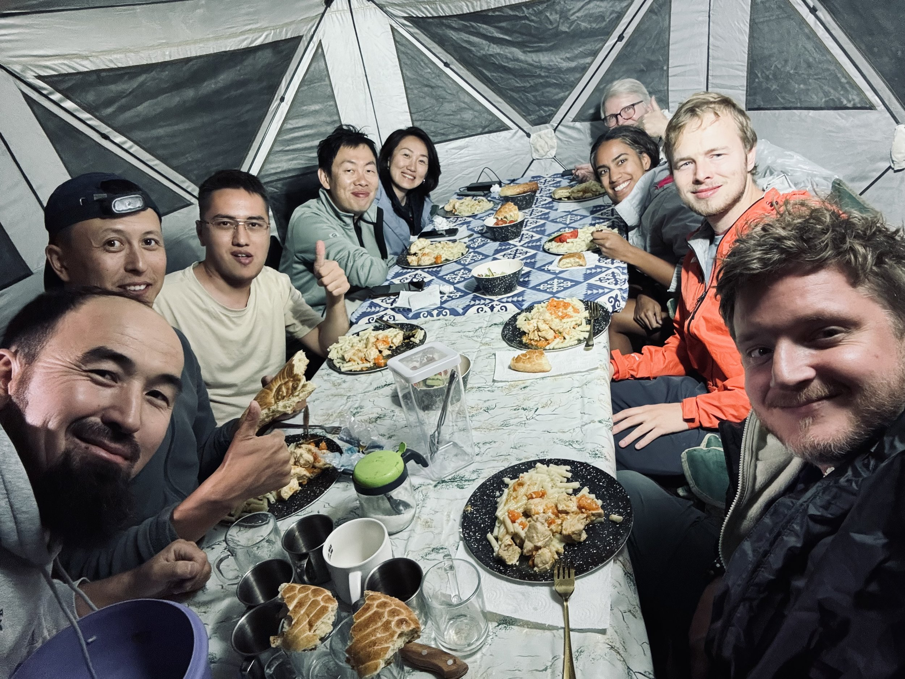
Day 2
The second day was pretty relaxed. After each breakfast, Aars would gently kick us out of the camp so that they could pack up by saying “you can go for a walk [points in a random direction] that way.” We got the message so we’d start wandering around in random directions until the cars would honk to signal us to come back. If we were far enough, the cars would drive over to grab us. One thing that was really nice about this tour was that there was plenty of time for self-exploration. Each day wasn’t too packed and for each site, we got the freedom to explore the area on our own and go for some short hikes without getting babysat. Our first stop on day 2 at Ybykty Canyon was a good example. We walked together with Aars for a little bit as we peered down the sponge-looking canyon from the top. We then explored the chasm on our own, creating our own musical instrument of sorts by banging on the arachnoid walls. Aars told us that previous tourists likened the canyon patterns to “Italian lingerie.” If this is what Italian lingerie looks like, well, uhh, interesting. I’ve decided not to ruin my Google search history by searching on the internet.


We visited an underground mosque and the outside necropolis after this stop. The underground mosque is fairly new, dating back the 12th-13th century but the necropolis dates even earlier to around the 8th century. It was interesting to see the huge mausoleums that were constructed by some of the families. It was almost identical to the cemetery we saw in Recoleta, Bueno Aires (holy macaroni… Buenos Aires! The first city of this year of travel!) except that this was an Islamic cemetery and Recoleta was for Catholics. In both locations, the size and grandeur of the mausoleum indicated the wealth and prosperity of the family for which it was constructed.
>
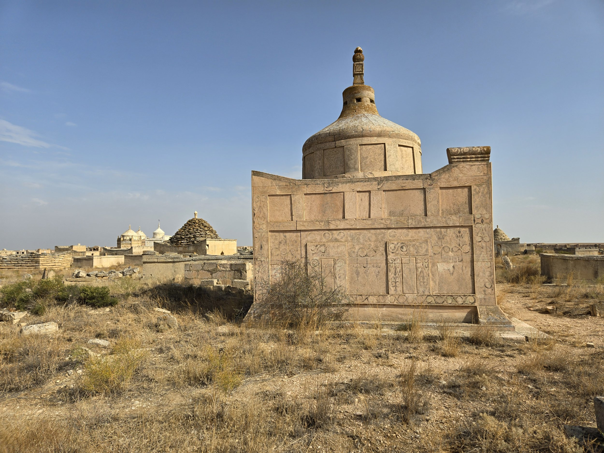
We headed to a little “Ethno-village” afterwards for the evening. We were divided up into two yurts, one for females and one for males, although differently from when Kevin and I last slept in a yurt, there were small single beds set up inside. This was our one night with a shower, which was much appreciated. We went on a hike in the nearby hills and Fei found tons of fossilized ammonites (a now extinct species that was the predecessor of the modern squid and octopus and lived…. in the ancient oceans) scattered around in the hills. Once we started looking at the rocks more carefully, we all found some ourselves. I can’t believe all these fossils are just hanging out here! Moono found one that was very intact and embarked on a careful excavation project to remove the sandstone around it with a hammer. Fei and Moono also found a cool geode that was colored red, orange, and purple. Ancient ocean confirmed!
>
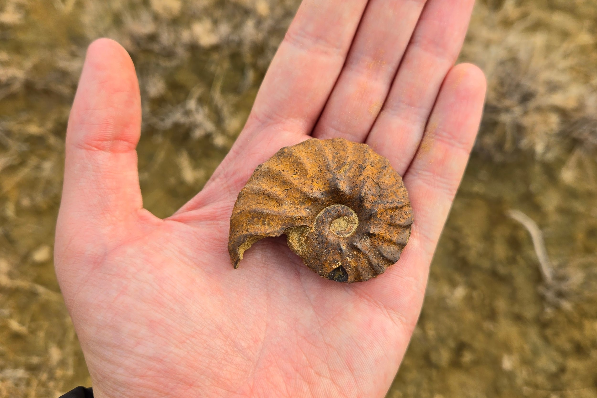
Day 3
The third day was a longer driving day out to the Tuzbair Salt Marsh. It was like déja vu with the Uyuni salt flats! We drove down and into the salt expanse with the drivers expertly navigating the unmarked land to get us to a spot where the white cliffs had hollowed out to look like dragons’ eyes. I asked Baygazy how he had learned to drive in this area and he said that he grew up in the area and learned all the places to go over many many years. It was impressive navigation especially because the mirage effect was really strong here; it seriously looked like we were about to drive into a lake the whole time except there was no lake at all! Other times, they were careful not to drive in areas where the salt was too moist lest the wheels get stuck. Moono and Ayan both had drones that they were flying for some overhead shots and if I get some of the videos (it takes a long time to slowly process all the clips), I will update this blog post with some of the awesome footage that they got of our trip! I did taste some of the white stuff on the ground – yes, it was definitely salt.
>
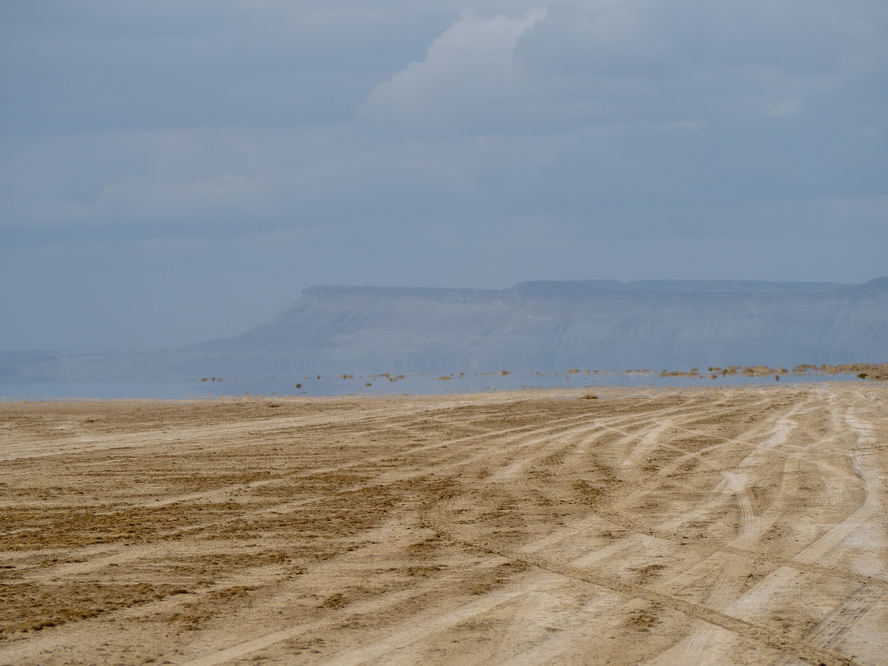
On the way there we stopped at a gorgeous viewpoint that had a bird’s eye view of the salt marsh. We tried our second adventurous drink of the trip: horse milk. At first, the drivers weren’t keen on letting the women try it because they said it was a drink for men for erm, improved performance in bed. “Kazakh viagra.” But with some cajoling and a promise not to drink too much (which would have been a bad idea anyways, because like camel milk, it’s a little hard on untrained stomachs), we all got to try some. Honestly, it wasn’t bad. It was sweetened with a bit of honey (which apparently helps performance even more!) and mostly tasted just like normal full fat milk with an unidentifiable aftertaste.
>
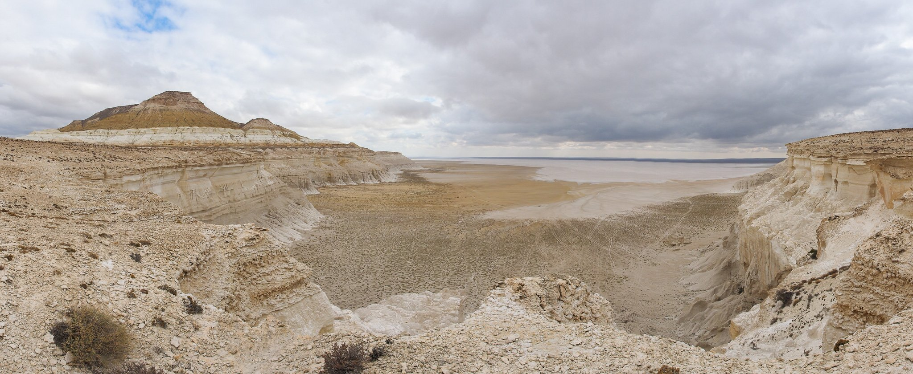
This was pretty much the only thing we did this day because of the long drive to get out here. We drove onwards to a place called the Kyzylkup tract, more affectionately known by the Italian tourists as “tiramisu” due to its striped red and white layers (I personally think “candy cane” would be better but I assume Italians know best when it comes to tiramisu!) Why are there so many Italian tourists? I still don’t know. By the time we got to Tiramisu it was pretty dark, but we were all expert camp setter-uppers by this point so all the shelters were up in no time. Moono cooked dinner this evening (with help from Fei and Igor) – a yummy simple Chinese tomato stew with egg that was eaten with bread that soaked up the delicious tomato juice. Dinner was an entertaining affair; I was on the verge of choking up my dinner in laughter with continued discussion about horse milk. Baygazy would say, “Kevin! Kevin! Kevin! Twenty liters horse milk. One liter one day. One month. [Smacks hands together]. Little Kevins!] Baygazy also prescribed horse milk as a way to solve China’s population decline to Fei and Moono. Who knew?! HORSE MILK!


Day 4
We woke up before dawn to watch the sunrise from the ridges of Tiramisu. Kyzylkup was quite a fun landscape to walk across; after a short steep hike up, the crest of the landscape is pretty flat so you can traverse across the tract to any point. We kept walking until we found a spot that was unobstructed by other parts of the tract and waited until the sun slowly came up. The sun was a slow poke! Ok, obviously not really, but there was a hill in the distance that blocked the horizon and I wanted breakfast and tea and I was getting hangry at the sun for being slow to rise up and over the hills. Eventually the sun did rise and after a few more pictures, we meandered back down to tear down camp and eat breakfast.

Kevin and I at sunrise. PC: Igor.


This was a full day! After tear-down, we headed to our first stop which was Beket-Ata, a famous underground mosque created by a Sufi scholar named Beket. It’s a place of pilgrimage for many Kazakh muslims and involves a descent down a long set of stairs to get to the mosque. The view from the hike is really beautiful with sweeping panoramas of the Ustyurt plateau. There’s a helicopter pad at the bottom of the stairs; the story goes that some sort of country leader tried to avoid having to do all the stairs to visit Beket-Ata and built a helipad but on their attempts to land there, the winds blew strongly and the chopper wasn’t able to land so they assumed Beket’s spirit was disallowing it. And now the helipads are in disrepair. We did the short hike in the morning so it wasn’t too bad but I had to cover my hair and I didn’t have a scarf so I chucked my raincoat on my head and hiking in the heat with a nonporous raincoat is definitely something I cannot recommend.
>
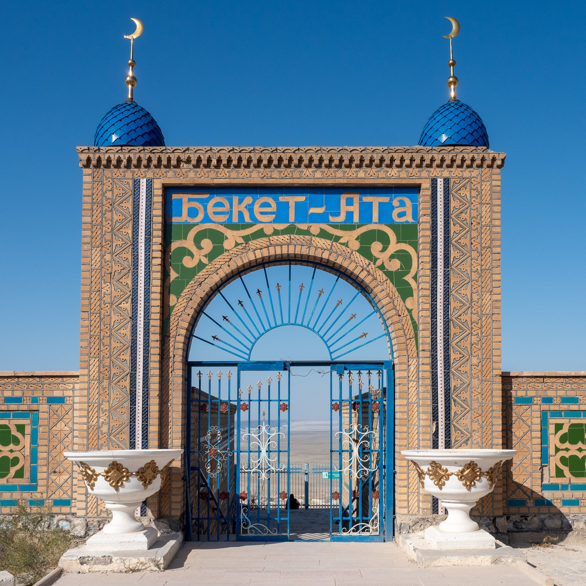
>
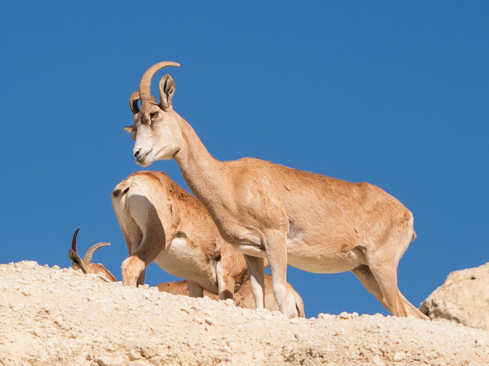
Afterwards we headed out to a couple of panorama viewpoints of the Bozzhyra tract. These viewpoints were spectacular! I really loved the first one of “Dragon’s Crest” where a mountain island in the plains jutted out, really in the shape of a dragon’s back. I also thought it sort of traced out the Angel’s Landing hike in Zion. Gorgeous. The second viewpoint, called “Martian’s Viewpoint” was also spectacular. We were lucky to dine on lunch with this background. We got bombarded by some more Kazakh tourists at this spot and took a bunch of photos with them, though this time, we remembered to take a photo for ourselves! This was probably the largest group that we’ve taken photos with and bonus, with the Kazakh flag. People love to bring the country flag into their photos so I’m glad we got one!
>
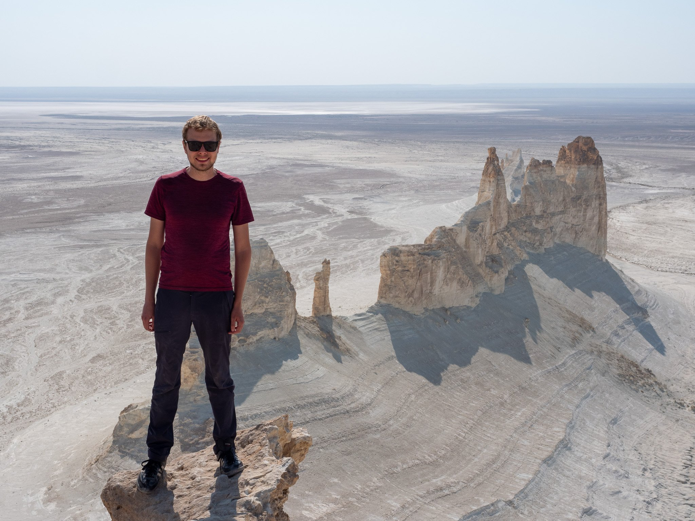
>
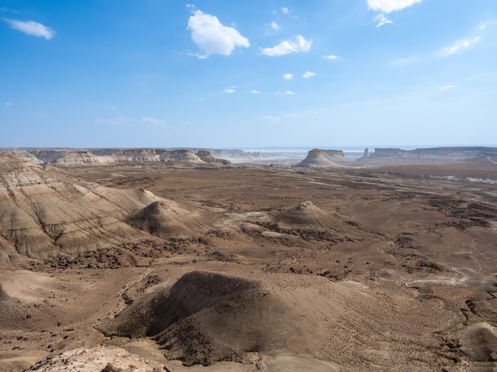
>
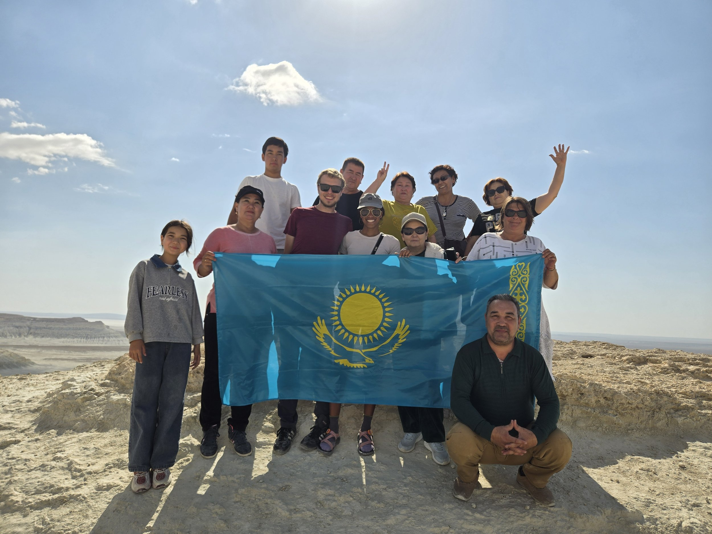
The trip really saved the best for last though. We did one final spot at a viewpoint that required a short hike to get to, just as the sun was setting. Oh my gosh; the drivers were definitely quite comfortable with us at this point and started showing off a bit on what their vehicles and they could do. So they drove straight up the most narrow path on some mountains past the parking area of the place where we were hiking. Very obviously they were in full control, but I was holding on for dear life as the car seemed to teeter on the slender steep hills. Holy moly.
The short hike took us up onto one of the mountain islands we previously saw from the viewpoints and right onto its overhang. I only briefly stayed at the overhang to take some photos because it was a bit too precipitous for me, but hung a little further back to take in the unbelievable landscape and colors as the sun set. The view point had such a wonderful picture of the “fangs” that jutted out like Monument Valley in Colorado. The best for last indeed.
>
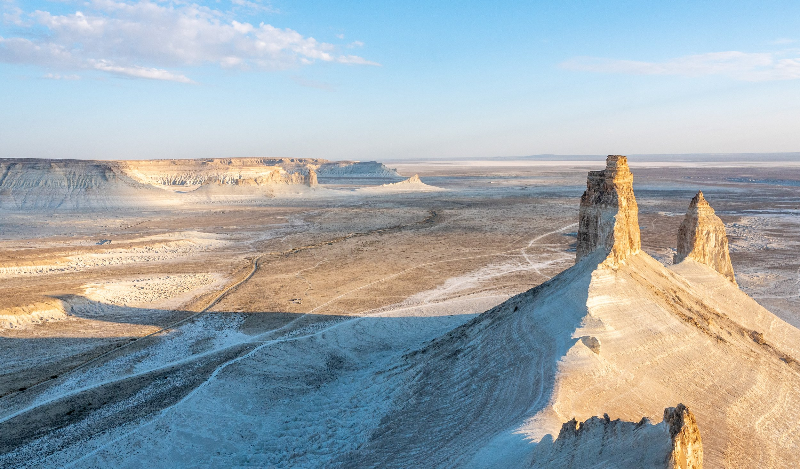
>
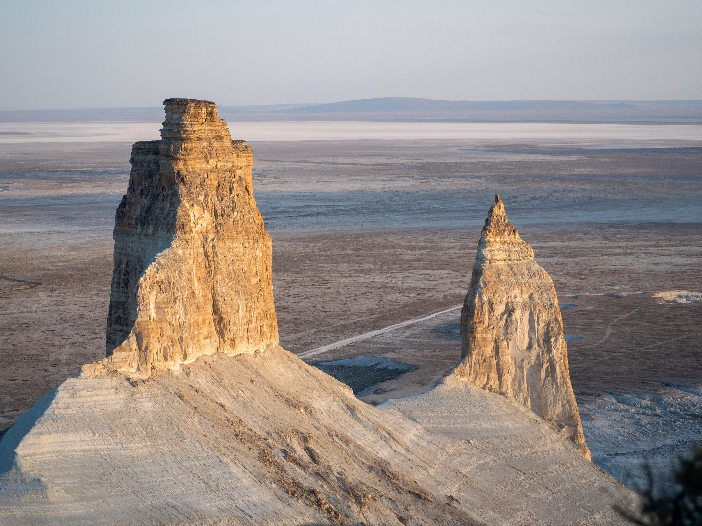
Baygazy and Ayan drove down the mountain (yes, I was mentally clinging as we descended) and right into the tract to set up camp very close to the base of the peak we had just hiked up. We had a lovely clear view of the night sky and Igor and Moono managed to take some outrageously good shots of the night sky on their phones. We stayed up quite late this evening with Baygazy and Ayan cooking a special meal: a stew called Beshbarmak with boiled horse meat and potatoes. Kevin said that it wasn’t too bad! Moono and I stuck to the salad and bread. We were quite sad that this last evening had come so quickly. We had an amazing time with all these people that we were lucky to cross paths with and it was hard to believe that we’d have to say goodbye so soon. After a few more cups of tea/hot water (I learned at this point to say no to more tea and instead just nurse cups of hot water because otherwise I didn’t have a chance of sleeping well with all the caffeine) we said our good nights and crawled back into our tents.
>
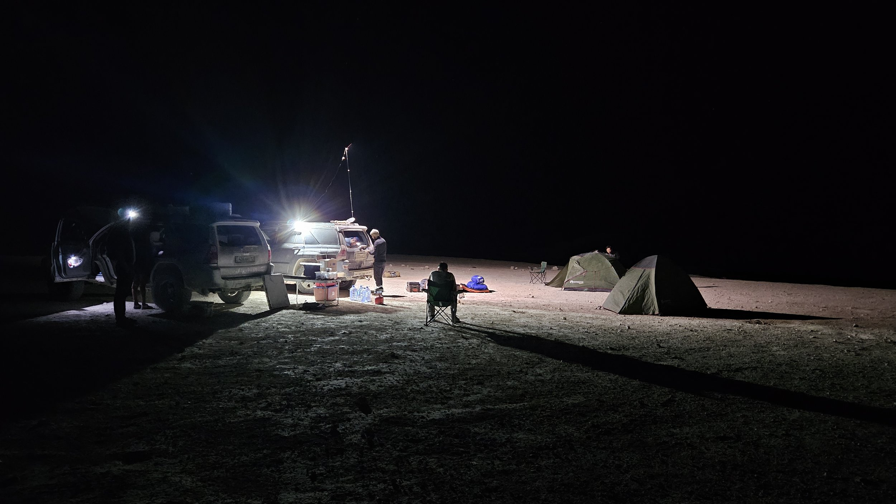
Day 5
We didn’t really have any stops planned for this day, but we at least took the morning, post breakfast, to wander around the gorgeous plateau one last time before we headed out. It was a long drive back to Aktau. Moono, Fei, and Igor were actually continuing on for one more day in the Ustyurt plateau while Betty, Kevin and I were heading back to Aktau. We at least got to share one more meal together, stopping at a local cafeteria for a luxurious meal, eaten while seated on the floor. Honestly, I just really enjoyed having a real toilet with toilet paper and a sink with running water and hand soap and a hand dryer. Luxurious! Alas, after lunch we parted ways with the other car, taking one last group picture with some more random Kazakh folks outside of the cafe. We made good time driving back to Aktau and picking up the rest of our bags before saying goodbye one last time to Baygazy, Betty, and Aars before heading to our airport hotel for the evening.
>
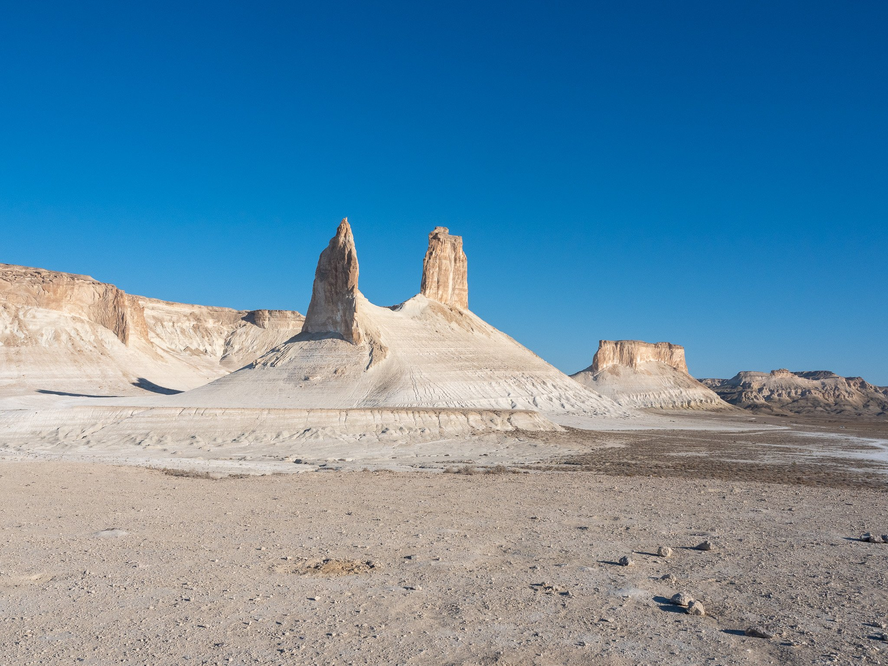
And that was the end of our time in Kazakhstan! I can’t believe we spent a full thirty days in the country; we both thought we’d be there for maybe two or three weeks max, but we ended up seeing so much over the extended time. And we still didn’t cover it all; there is definitely more to see in the Turkestan region of Kazakhstan and even more hikes we could have done in the mountains that border Kyrgyzstan. We’ve added Uzbekistan, Kyrgyzstan, and Azerbaijan to our list of future travel destinations. Betty had traveled to the former two and had really positive things to say and on a tour in Cappadocia, another woman who we met had also traveled quite a bit in Central Asia and said very positive things about Azerbaijan. The whole Central Asia region seems like an untrodden place for tourists and it has made for an exceptional experience with some of the most welcoming people (who aren’t just welcoming so that you’ll come into their shop and buy things) and the ability to quietly observe some spectacular sites without another person around. We’ll definitely be coming back one day for more!
>